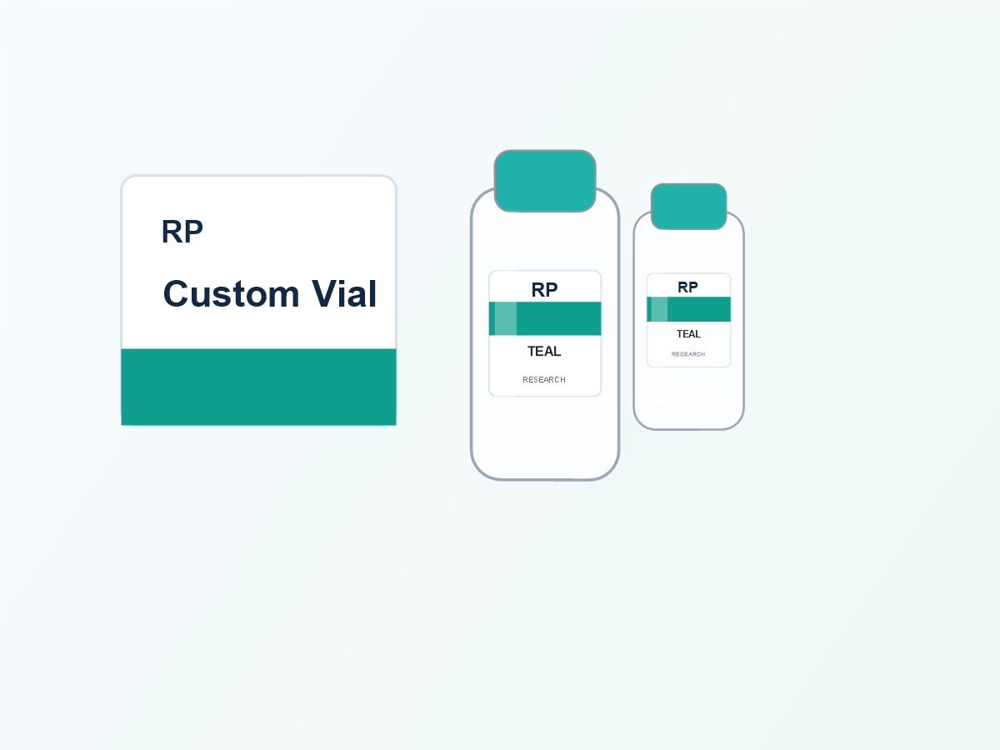
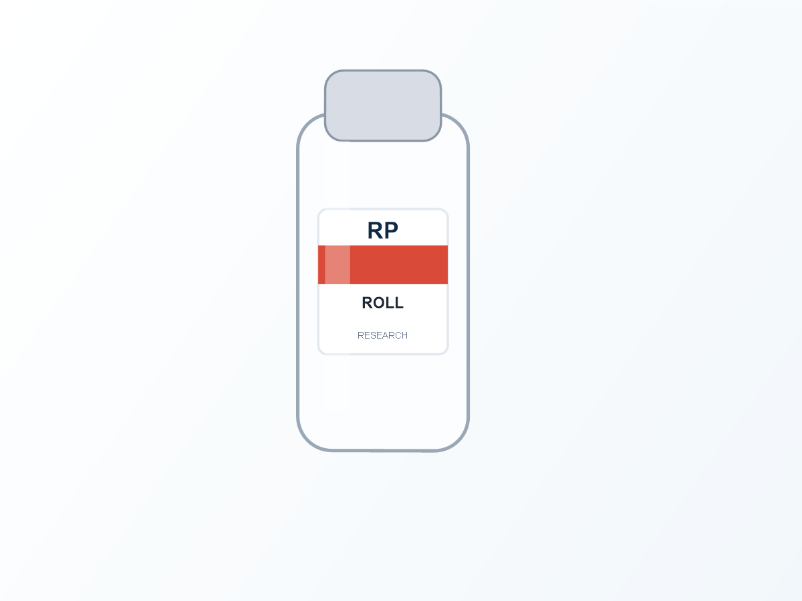

Many label orders arrive with a finished design but no application information. That is fine for a sample sheet, but not ideal when a team needs to apply hundreds or thousands of small vial labels consistently. The label artwork, roll construction and applicator workflow need to agree before printing begins.

When roll direction matters most
For hand application, the operator can usually turn the roll as needed. For a labeling machine, labels have to feed in the direction expected by its unwind system and sensor. If the roll is reversed, labels may arrive upside down, lead with the wrong edge or fail to feed as intended. Correcting that after production costs more time than confirming it in the proof.
| Hand application | Use a comfortable, consistent orientation so the team can pick and wrap each vial with less handling. |
|---|---|
| Semi-automatic application | Confirm the direction the backing liner unwinds and the point where the machine dispenses the label. |
| Automatic application | Share machine drawings or specifications for unwind direction, core, roll diameter, gap and label sensing. |
| Future reorder | Record the approved specification so later runs match the workflow without new guesswork. |
What the printer needs before producing a roll
Start with the intended application method. Then collect the core size, maximum outside roll diameter, web width, label gap, required unwind direction and the orientation of the label relative to the leading edge. If you do not have a machine specification, a photo of the roll path and dispenser can help your production team describe the requirement clearly.
Roll label order checklist
- Bottle diameter and final label size
- Hand, semi-automatic or automatic application method
- Required unwind direction from the machine supplier or operator
- Core size and maximum roll diameter
- Label gap and backing liner preference, if specified
- Number of labels per roll and total quantity
- Front-of-label orientation shown on the approved proof
Small vial labels need extra attention
Short labels on curved vials can be more sensitive to alignment than large carton labels. A small shift changes where the product name, batch field or QR code lands around the bottle. Keep the proof focused on the visible front panel and confirm which edge should lead during dispensing.


Do not confuse design orientation with unwind direction
A label may look upright in the artwork file while still being supplied in the wrong machine orientation. The artwork shows the label face. The roll specification describes how that face is presented to an application system. Ask for a proof or simple diagram that states both, especially when the project uses a left-right reading logo, a QR field or a matching front panel.
Get the roll right before the first run
Send your vial size, label size, quantity and application method. If a machine is involved, include its roll requirement or a photo of the dispenser for a practical proof check.
Chat on WhatsAppFAQ
Should I choose rolls or sheets for a first small batch?
Sheets work well for early design tests and low-volume hand application. Rolls make more sense when the process will be repeated or scaled.
Can RP match an existing roll label setup?
Yes. Send photos, previous roll specifications or the applicator requirements so the new proof can follow the existing setup.
What happens if I do not know the roll direction?
State that the labels will be hand applied, or ask the machine supplier/operator for the exact unwind requirement before you approve production.